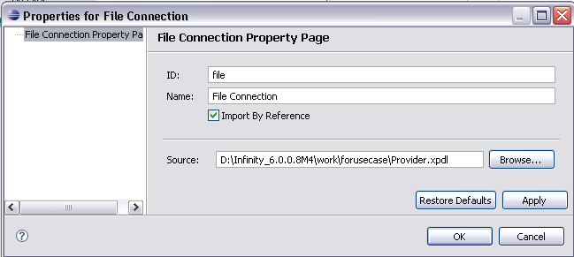
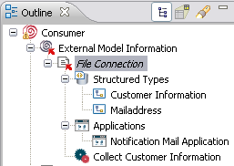
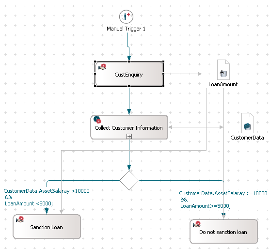
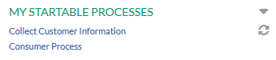
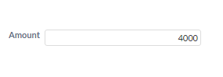
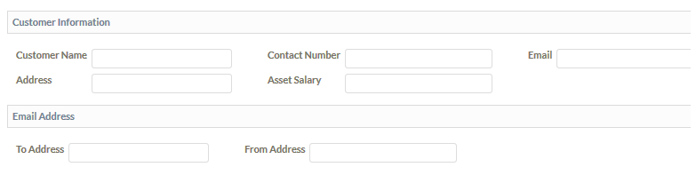
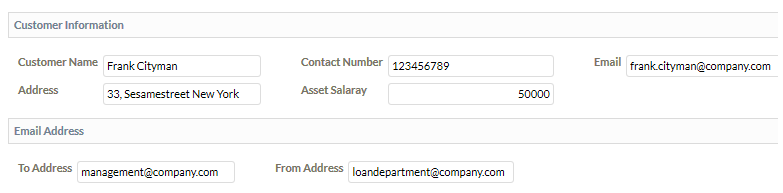
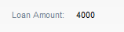

Creating a Consumer Model
As the provider model is ready, you can create another model in which you can reference the
elements of the provider model.
In this chapter, we are going to reference the Collect Customer Information process.
To reference the process, we need to create a file connection by reference and drag-drop the elements that we
want to reference.
The following steps explain how to establish the file connection.
Creating a File Connection
- Create a model named Consumer.xpdl
- In the Outline view, right-click the External Model Information node and select File Connection
- In the file connection properties dialog box, click the Browse button
to provide the path for the created provider model
named Provider.

Figure: File Connection
- Click Apply and OK
Once the file connection is established, the elements of the provider model that can be referenced are available
under the created file connection in the Outline view.

Figure: Outline View of Consumer Model
Referencing the Elements and Creating the Workflow
The following steps explain how to reference the elements and create a consumer model.
- Create a manual trigger
- Create a manual activity named CustEnquiry
- Drag and drop the referenced process definition named Collect Customer Information from the Outline view.
Note that you need to drag the provided interface / process in the consumer process. Otherwise
the interface cannot be selected in the 'Provides Interface' property of the process in the consumer model.
- Connect all these activities
- Create two more manual activities named Sanction Loan and Do not Sanction Loan
- Create a primitive data named LoanAmount of integer type and provide it in the in data mapping for the Sanction Loan and Do
not Sanction Loan activities
- Also, provide the LoanAmount in the Out Data Mappings of the CustEnquiry activity
- Drag and drop the CustomerInformation from the Outline
view under the File Connection and rename it to CustomerData.
- Define the In Data Mapping in the ProcessInterfaceContext as CustomerData in the Data drop-down list
and Formal Parameter 1 as the Access Point.
- Define the Out Data Mapping in the ProcessInterfaceContext as CustomerData in the Data drop-down list
and Formal Parameter 1 as the Access Point.
- Right-click the Collect Customer Information activity and select
Split Behavior > XOR.
- Define the Condition Expression as CustomerData.AssetSalary >10000
&&
LoanAmount <5000; for Sanction Loan activity
- Also define the Condition Expression as CustomerData.AssetSalary<=10000
&&
LoanAmount>=5000; for Do not Sanction Loan activity
- Define Administrator as the Participant for the required elements
The created consumer model should look like as shown in the following screenshot:

Figure: Consumer Model
Executing the Workflow of Consumer Model
Here we will deploy the provider and consumer models in the Stardust Portal.
Note the workflow of the Consumer model.
As per the defined workflow of Consumer model, the process definition of the consumer is triggered
and then the referenced process definition Collect Customer Information is invoked. Let's see how this
happens in the Stardust Portal.
Perform the following steps:
- Start your server and deploy the model. For details on how to deploy a model,
please refer to the section Deploying
Multiple Models from One Audit Trail of the Deploying a Workflow
Model chapter of the Modeling Guide.
- Start the Stardust Portal as described in the chapter
Logging in the Stardust Portal of the
End User Handbook.
- Login as administrator (motu/motu). You can use the Shift-F8 short key.
- In the Workflow Perspective, start the process from the consumer model named Consumer Process.

Figure: Start Consumer Process
- Enter the loan amount as 4000 and complete the activity CustEnquiry.

Figure: Complete Activity
As soon as you complete this activity, the Collect Customer Information process is referenced from
the provider model.

Figure: Collect Customer Information Process
- Enter the customer information and complete the activity.

Figure: Complete the Collect Customer Information Process
As soon as you complete the CustomerInformation activity, the customer is notified by sending an email.
Here the provider process Collect Customer Information is complete and the workflow returns to the consumer model.
The next activity of the consumer model gets triggered.
- The Sanction Loan activity is triggered as it satisfies the given condition in the modeler. Complete the activity.

Figure: Sanction Loan